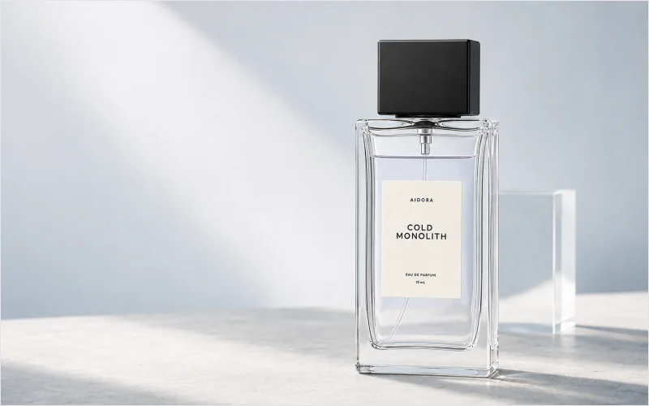
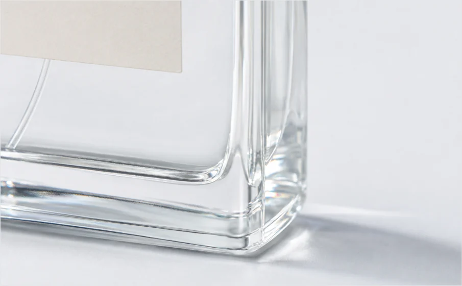
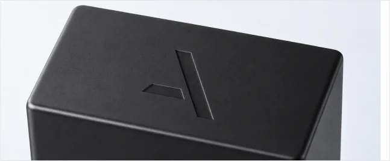

AIDORA Brand
향은 공간을 채우기보다 감정과 감정 사이의 여백에 조용히 머뭅니다
AIDORA는 말보다 늦게 도착하고, 오래 머물며, 일상의 온도를 조용히 바꾸는 향을 만듭니다.

향은 사람을 앞서가지 않고, 가까이 있을 때만 조용히 드러납니다.
AIDORA는 향을 강한 인상으로 남기기보다, 피부와 공간 사이에서 천천히 드러나는 감각으로 바라봅니다.
가까이 있을 때만 느껴지는 존재감, 시간이 지난 뒤 더 선명해지는 잔향, 그리고 일상의 장면을 조용히 정리하는 기준을 중요하게 생각합니다.
-
Quiet Presence
조용하지만 사라지지 않는 존재감
-
Emotional Space
감정이 머무를 수 있는 여백
-
Soft Trace
시간이 지나며 남는 부드러운 흔적
-
Architectural Balance
형태와 향, 공간의 정제된 균형
Scent Standard
AIDORA의 향은 자극적인 첫인상보다 오래 남는 균형을 기준으로 선택됩니다.
차가운 공기감, 깨끗한 섬유감, 마른 우디함, 낮은 머스크를 중심으로 일상 속에서 과하지 않게 머무는 향을 설계합니다.
-
Clear Air
첫 향은 무겁지 않고, 깨끗한 공기처럼 열려 있어야 합니다.
-
Skin Balance
피부 위에서 지나치게 달거나 강하지 않고 자연스럽게 섞여야 합니다.
-
Quiet Wood
우디함은 따뜻함보다 구조감과 깊이를 전달해야 합니다.
-
Lasting Mood
잔향은 오래 남되, 주변을 압도하지 않아야 합니다.
Material & Object
AIDORA의 제품은 향을 담는 용기를 넘어, 공간 안에 놓이는 조용한 오브제로 설계됩니다. 투명한 유리, 매트한 블랙 캡, 웜 화이트 라벨, 사각형 기반의 패키지는 향이 가진 정제된 감각을 시각적으로 이어주는 요소입니다.
중요한 것은 장식이 아니라 질서입니다. 제품명, 용량, 라벨, 박스의 여백은 모두 같은 언어로 정리되어야 합니다.


-
Transparent Glass
빛을 통과시키는 차가운 투명감
-
Matte Black
향의 중심을 잡아주는 묵직한 대비
-
Warm White Label
차가운 배경 위에 남는 작은 온도
-
Package Grid
정보를 조용히 정리하는 사각형의 질서
Direction
AIDORA는 더 많은 제품을 만들기보다, 하나의 감각이 피부와 공간, 일상의 루틴 속에서 같은 온도로 이어지는 방식을 선택합니다.
향수는 피부에 머물고, 핸드 앤 바디 제품은 반복되는 일상에 스며들며, 홈 오브제는 공간의 분위기를 조용히 정리합니다.
-
Fragrance
피부 위에 남는 조용한 존재감
-
Routine
반복되는 일상 속 감각의 정리
-
Space
환경과 감정 사이에 놓이는 오브제
말하지 않아도 전해지는 향 곁에 머무는 조용한 존재감
AIDORA